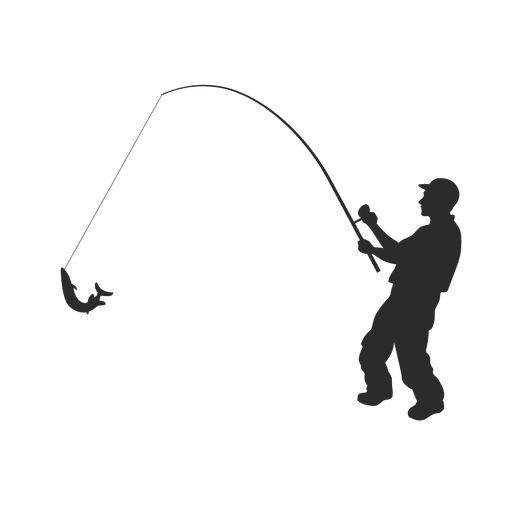

Wędkarstwo i pyszne rybki
Dzień dobry!
Znajdujesz się na stronie fanatyków wędkarstwa. Możesz znaleźć tutaj takie rzeczy jak:
- Inforamacje o wybranych rybach
- Aby być dobrym wędkarzem musisz znać swoje ryby bardzo dobrze.
- Historia wędkarstwa
- Doweisz się kto i w jakim celu zapoczątkował wędkarstwo.
- Powiedzenia wędkarskie
- Poczujesz się jakbyś był podczas wybrawy na ryby!
- Quiz
- Sprawdź jak bardzo doświadczonym wędkarzem jesteś!
